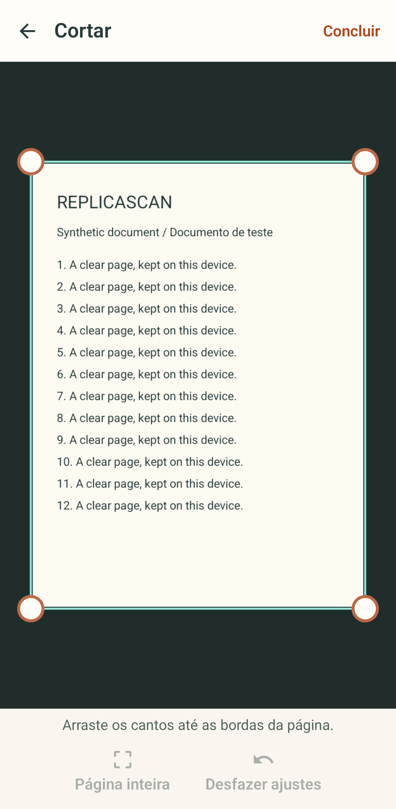

Um botão para escanear
Escanear abre o scanner de documentos do Google Play services; importar imagens é a segunda opção. Sem ele, uma foto com recorte manual resolve.
Scanner Android com foco local
Escaneie, ajuste e guarde seus documentos no Android. Reconheça texto no aparelho e exporte PDF, JPG ou PNG.

Produto
A versão atual cobre digitalização no dispositivo, revisão com o documento em destaque, OCR estruturado, busca local e exportação progressiva, sem backend e sem escolher tipo de documento antes de escanear.
Escanear abre o scanner de documentos do Google Play services; importar imagens é a segunda opção. Sem ele, uma foto com recorte manual resolve.
Cortar, girar, quatro visuais simples e texto reconhecido no aparelho, pronto para copiar e buscar.
PDF pesquisável, JPG ou PNG gerados a partir da página original, sem arquivo parcial se algo falhar.
Material público
Capturas do protótipo Android da v0.4.1, no emulador e com estados de teste; a revisão visual está em andamento. Não demonstram câmera física ou OCR realizado. Veja a matriz de validação no repositório.

Ajuste os quatro cantos, volte à página inteira ou desfaça ajustes antes de aplicar.

Veja a página real, escolha nome, PDF, JPG ou PNG e ajuste as opções do formato.

Acompanhe a mesma página durante a gravação. Ao concluir, abra ou compartilhe os arquivos salvos.
Privacidade
ReplicaScan prioriza processamento local, armazenamento local e compartilhamento pelas APIs padrão do Android. Backup e transferência automática dos dados privados ficam desativados, e o app não exige login para escanear, revisar ou exportar.
Instalação
Use Android Studio com JDK 17+ e Android SDK Platform 36. O CI já cobre build, lint e testes unitários.
git clone https://github.com/Soturine/replicascan.git
cd replicascan
./gradlew assembleDebug
./gradlew testDebugUnitTest
./gradlew lint
Para o GitHub Pages funcionar no repositório publicado, ative:
Settings > Pages > Source: GitHub Actions.
Documentação
Roadmap
v0.2.7: lifecycle privado, backup controlado, cache recuperável e falhas de página explícitas.
v0.4.1 em desenvolvimento: laranja mais vivo com contraste, Home acolhedora, ícone adaptativo teal e exportação acessível em fonte ampliada. A mascote mantém poses inteiras sem recortes defeituosos; o rig articulado final e a qualificação da release ainda estão pendentes.
Próximo marco: desempenho medido, QA físico, revisão linguística nativa e preparação para loja após o gate em aparelho.
FAQ
Sim. Scanner e OCR processam no aparelho, com componentes baixados pelo Google Play services. Sem ele, use foto com recorte manual.
Em Android 10+ o app salva em Downloads/ReplicaScan. Em versões anteriores, a saída cai no armazenamento do app.
Sim. O workflow Android CI roda assemble, lint e testes unitários no GitHub Actions.